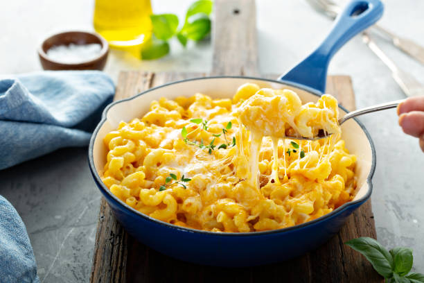

Mac and Cheese

Ingredients
- Macaroni
- Butter & Flour
- Milk
- Cheese
- Seasoning
- Bread Crumbs
Preparation
The instructions below are designed to show you how to prepare your mac and cheese
- Boil the Macaroni, drain and transfer to a baking dish
- Make the cheese sauce, and pour the sauce over the noodles
- Make the topping and spread it over the mac and cbeese
- Bake the mac and cheese until the topping is golden